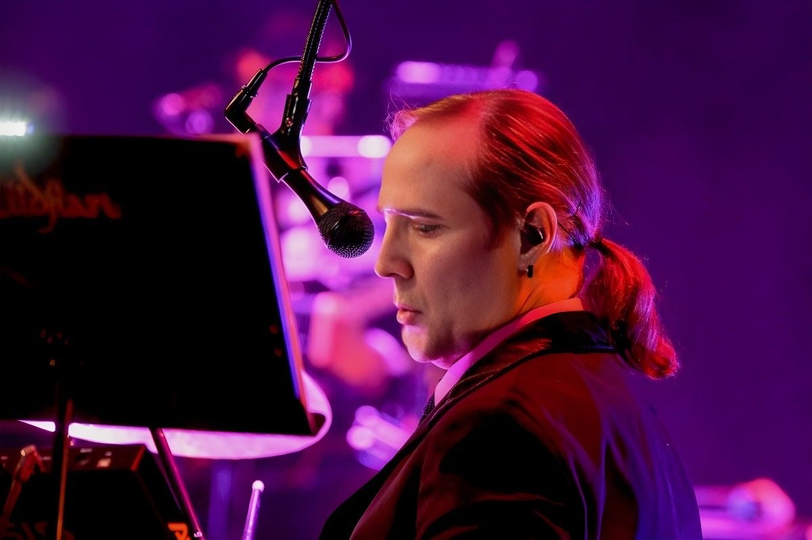

Bobby M.
Bass & Vocals
Co-founder. A live & session veteran who traces his calling to The Beatles' Ed Sullivan debut.

More than just the Beatles, this fab '60s musical retrospective spans the entire first wave of the British Invasion era — chock full of the groovy sights and sounds from both sides of the Atlantic.

First, you may hear chart toppers by iconic British groups such as The Zombies, Dave Clark Five, The Rolling Stones, The Who, The Moody Blues, Herman's Hermits, The Kinks and many others.
As bassist/vocalist Bobby M. notes, "One of the reasons audiences keep coming back is because they get to see and hear our faithful recreations of songs by these beloved artists."

The American musical response follows as the band takes you through an exciting, high-energy set of hits by legendary artists like The Monkees, The Beach Boys, Steppenwolf, Tommy James and the Shondells, Frankie Valli and The Four Seasons, The Mamas and The Papas, Neil Diamond, and The Turtles — to name just a few.

This journey through the 1960s concludes with an extraordinary note-for-note finale paying homage to the Four Lads from Liverpool, The Beatles!
"We posed the question — what if the Beatles had to perform their music today only as the four-piece band they were?" explains guitarist Lee Scott Howard. The result by this "Fab Foursome" is truly astounding.
Experience a '60s musical revolution with The British Invasion Years.

The show has generated tremendous excitement across the nation and internationally — band members having shared the stage with some of the greatest names in rock history.

Live & session musicians Bobby M. (Bass) and Lee Scott Howard (Guitar) credit seeing The Beatles' debut on Ed Sullivan with setting them both on the road to becoming full-time musicians. Decades later, their common career paths would finally merge…
One night, after collaborating on another project, these best of friends developed the concept of an exciting, unique concert experience — meticulously recreating all the amazing hit songs they grew up listening to, complete with period-accurate outfits and multimedia. In that moment, the foundation for The British Invasion Years was forged.

Seasoned keyboardist/guitarist Jon Wolf had caught wind of their idea and wanted in. He dropped "subtle hints" at sessions, like randomly playing pieces of The Beatles' Abbey Road medley. Jon's plan worked — and he was immediately brought on board.
When the band went searching for a drummer, Bobby's longtime friend Dave Hall was available at just the right time, enthusiastically answering the call. With the lineup now complete, the "Four Boys Making All That Noise" launched its '60s musical invasion!
Bass & Vocals
Co-founder. A live & session veteran who traces his calling to The Beatles' Ed Sullivan debut.

Guitar & Vocals
Co-founder. Best friends with Bobby, he helped forge the concept and shapes the note-for-note Beatles finale.

Keys, Guitar & Vocals
Seasoned keyboardist/guitarist who dropped Abbey Road "hints" until he was brought on board.

Drums & Vocals
Bobby's longtime friend, available at just the right time to complete the lineup.